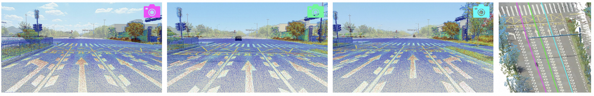
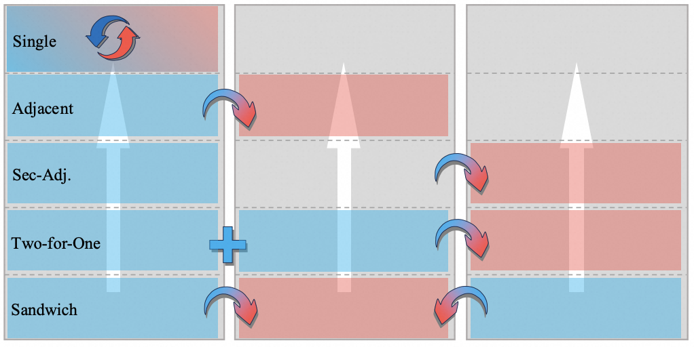
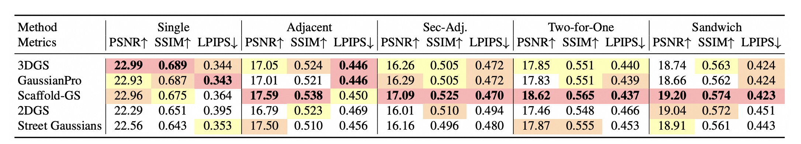

Para-Lane: Multi-Lane Dataset Registering Parallel Scans for Benchmarking Novel View Synthesis
Anonymous 3DV submission(暂无)
Abstract
To evaluate end-to-end autonomous driving systems, a simulation environment based on Novel View Synthesis (NVS) techniques is essential, which synthesizes photo-realistic images and point clouds from previously recorded sequences under new vehicle poses, particularly in cross-lane scenarios. Therefore, the development of a multi-lane dataset and benchmark is necessary. While recent synthetic scene-based NVS datasets have been prepared for cross-lane benchmarking, they still lack the realism of captured images and point clouds. To further assess the performance of existing methods based on NeRF and 3DGS, we present the first multi-lane dataset registering parallel scans specifically for novel driving view synthesis dataset derived from real-world scans, comprising 25 groups of associated sequences, including 16,000 front-view images, 64,000 surround-view images, and 16,000 LiDAR frames. All frames are labeled to differentiate moving objects from static elements. Using this dataset, we evaluate the performance of existing approaches in various testing scenarios at different lanes and distances. Additionally, our method provides the solution for solving and assessing the quality of multi-sensor poses for multi-modal data alignment for curating such a dataset in real-world. We plan to continually add new sequences to test the generalization of existing methods across different scenarios. The dataset will be released publicly, and our benchmark will accept submissions thereafter.

Motivation
内容待修改: Most existing NVS methods in autonomous driving, primarily focus on evaluating novel views based on intrepolation quality rather than lateral viewpoint shifts which is due to the lack of datasets and bencharks specifically designed for this purpose. Therefore, we implemented an autonomous system equipped with LiDAR and camera sensors to capture real-world data and develop a unified framework to construct the para-lane dataset, which can be used to feature a two-phase pose optimization mechanism for aligning data from exteroceptive sensors both temporally and spatially.
Sensor Setup and Scenes

内容待修改:We implemented an autonomous system equipped with one front-view camera, four surround-view fisheye-cameras and three 3D laser scanners with 32 LiDAR channels to scan and collect real-world scene data. All sensors' frames timestamps are synchronized at the hardware level, and sampling points from three different laser scanners have been combined into one single LiDAR frame after motion compensation. Besides, we have add additional sensors inside which helps us obtain a high-quality initial trajectory before data alignment process, such as Inertial Navigation System (INS).
Dataset Visualization
内容待输入：大概可能就是对原始数据的处理，比如说动静物体拆分，有可能
Benchmark and Evaluation Metrics

内容待修改： We selected a range of NeRF/3DGS-supported methods which specifically designed for autonomous dribing datasets for model training. The training set for each method have been standardized which includes 200 frames per sequene, and we apply coarsely labeled dynamic masks to filter out the influence of moving vehicles and pedestrians. The evaluation metrics are built based on five different tracks. (1) Single lane regression, (2) Adjacent lane prediction, (3) Second-adjacent lane prediction, (4) Adjacent lane prediction (trained from two lanes), and (5) Sandwich lane prediction (trained from two side lanes). We evenly sample 25 frames from each sequence as the ground truth, which includes Peak Signal-to-Noise Ratio (PSNR), Structural Similarity Index (SSIM), and Learned Perceptual Image Patch Similarity (LPIPS).
Benchmark Result

we found exactly the same conclusion for all methods: the performance gradually decreases in the following sequence: Single Sandwich > Two-for-One > Adjacent > Second-Adjacent. When the training and testing views are on the same trajectory, all methods achieve the best NVS results. However, when the testing viewpoint undergoes lateral shifts, the results are compromised to varying degrees.
Dataset Download
Our dataset is publicly available, but requires a permission request via email
Contact email: xxxxxxxx@cainiao.com
Format:
Citation
@article{null,
title={Para-Lane: Multi-Lane Dataset Registering Parallel Scans for Benchmarking Novel View Synthesis},
author={anonymous},
journal={暂无},
year={2025}
}The website template is based on 3d-aigc, who also adapted from Zip-NeRF and borrowed from Michaël Gharbi and Ref-NeRF.